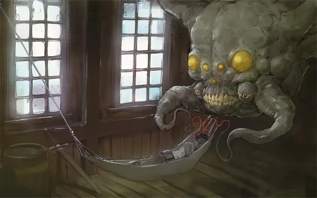

Йспуг
Feyr
Большая Аберрация, обычно хаотично-злая

Класс Доспеха 16 (природный доспех)
Хиты 88 (16к10)
Скорость 0 футов, летая 50 футов (парит)
| мод | спас | ||
|---|---|---|---|
| СИЛ | 16 | +3 | +3 |
| ЛОВ | 16 | +3 | +3 |
| ТЕЛ | 11 | +0 | +0 |
| мод | спас | ||
|---|---|---|---|
| ИНТ | 14 | +2 | +5 |
| МДР | 14 | +2 | +5 |
| ХАР | 11 | +0 | +0 |
Навыки Восприятие +5, Скрытность +9
Иммунитет к состояниям испуг
Чувства тёмное зрение 120 футов, пассивное Восприятие 15
Опасность 5 (1800 опыта)
Бонус мастерства +3
Действия
Мультиатака. Йспуг совершает одну атаку Ужасающим укусом и Щупальцем.
Ужасающий укус. Рукопашная атака оружием: +6 к попаданию, досягаемость 5 фт., одно существо. Попадание: 8 (1к10 + 3) колющего урона. Каждое существо в пределах 10 футов, которое может видеть йспуга, должно преуспеть в спасброске Мудрости Сл 13, иначе станет испуганным чудовищем до конца следующего хода йспуга.
Щупальце. . Рукопашная атака оружием: +6 к попаданию, досягаемость 10 фт., одно существо. Попадание: 17 (4к6 + 3) урона психической энергией, и цель становится схваченной (Сл высвобождения 13). Пока цель схвачена, йспуг не может использовать это щупальце против других целей. У йспуга два щупальца, каждое из которых может схватить одно существо.
Невидимость. Йспуг становится невидимым, пока не атакует, не использует Подпитку кошмаром или не станет видимым бонусным действием.
Подпитка кошмаром (1/день). Йспуг выбирает в качестве цели одно бессознательное существо, которое он может видеть в пределах 10 футов. Цель должна преуспеть в спасброске Мудрости Сл 13, иначе получит 27 (5к10) урона психической энергией. Йспуг получает временные хиты равные нанесённому урону.
Описание
Йспуг (читается «испуг») — ужас с щупальцами, бесшумно питающийся сильными эмоциями. Чтобы максимально обезопасить себя, он предпочитает пожирать кошмары других существ, пока те спят.
Йспуги избегают яркого света, но не получают от него никакого вреда. Из-за этого они чувствуют себя как дома в пустоте Дикого космоса, в тёмных переулках и подземельях. Наткнувшись на магический корабль йспуг попытается проникнуть в воздушную оболочку судна и укрыться там, уединившись и оставаясь невидимым, пока не найдет подходящую для нападения спящую жертву. В столкновении он скорее отступит, чем погибнет.